Introduction
This is an extremely thorough tutorial on how to create high-quality meme-style images in GIMP, which is the GNU Image Manipulation Program. GIMP is a free image editor available for Linux, Windows, and macOS. It's both free in that you don't have to pay for it, and it's free in that it's Free Software. “Where do I get GIMP?” you might ask. You can get the latest version of GIMP for Windows or macOS from its website at https://www.gimp.org/. If you're on Linux then I recommend just installing it from your package manager. Note: I reference keyboard shortcuts throughout the tutorial and these are for Linux or Windows. If you're on macOS, you're going to have to use the menu options I describe, or figure out the shortcuts yourself.
This is Revision 2 of this article.
What is a meme-style image?
What do I mean by a meme-style image? I'm specifically referring to the typical white-text-black-border captions overlayed on images. Here's an example:
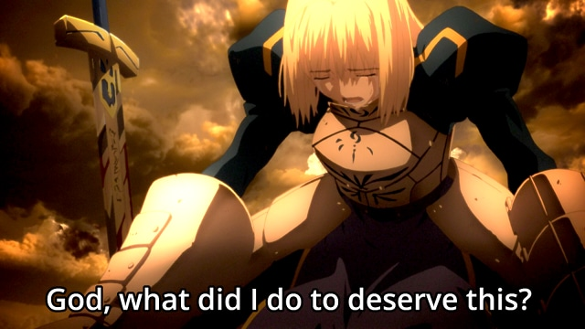
Note that this might not look like a classic meme because of the typography. Classic memes use entirely uppercase Impact Condensed, and here I've used ordinary text with Open Sans Semibold. This isn't a huge problem and I'll show you how to do both. But without further ado, let's get to it.
Laying the original text
Open GIMP, and then open the image on which you want to overlay your meme-style text. (You do have to decide this first, otherwise you'll go nowhere.) You're going to be using a few window panels, so hit Ctrl+B to open the toolbox and Ctrl+L to open the layers panel. I don't know what the shortcuts are on macOS, but I do know that on all platforms you can also do Windows → New Toolbox to open a toolbox and Windows → Dockable Dialogs → Layers to open the layers panel. You should see something like this:
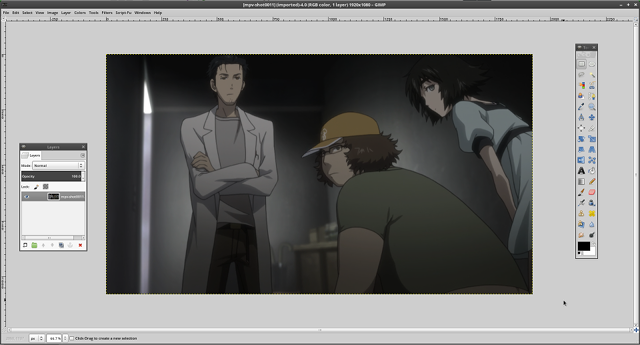
If you want to follow along with the same image I used, you can access the original background image here.
{kind=link}
Now, we're going to click the “A” icon in our toolbox to select the text tool. (You can also hit 'T' as the keyboard shortcut to select this tool.) Type the phrase you want to overlay into the box. It will be gross and small and this is not a surprise. The phrase I chose for this tutorial is "When you tell a bad pun and everyone does this, this means you have won." Here's what it might look like:
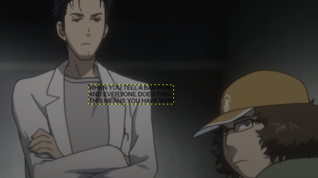
First let's change the font to something that we actually want to use. I'm going to use Impact Condensed right now and I'll explain a bit about the fonts later. To do this, we're going to doubleclick on the text tool icon to open the Tool Options dialog box. Then, we'll pick the right typeface. I've pointed to five important options that you should look at. Either way, with the text tool selected, highlight the entire selection, and then change a few of the options.
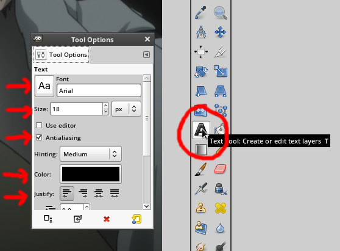
These are what you want to set the options to:
- Font: Impact Condensed. If you're going to use this you should also use entirely uppercase letters. More about fonts later.
- Font Size: I used 72, which is the same that I use for all 1080p images. I use 48 for 720p images. A good rough estimate for the font size is 1/15 of the vertical resolution of the image. I also like to have the font size be a multiple of 12. It's not necessary, but it'll be nice later.
- Anti-aliasing: Make sure this is enabled. It should be by default, but it'll look gross if it's not, so doublecheck.
- Color: White.
- Alignment: I prefer center alignment for multi-line captions, but you can choose which one looks the best (usually center, sometimes left).
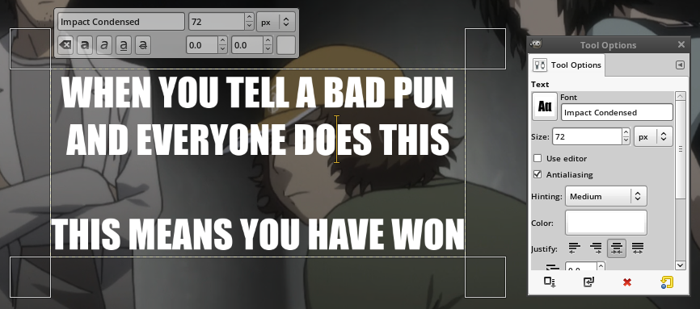
I also ended up adding an extra newline. You can modify the text at any point along the way; it's not like anyone's stopping you. Anyway, the next step is to position the meme text. To do this, we're going to use the move tool. Doubleclick the move tool and then in the move tool options, select "Move the active layer." This setting causes the click-n-drag motion to move the layer that's currently active, whether or not we actually click on that layer. This is nice because we never actually want to drag the background image so it allows us to click-n-drag sloppily (i.e. it doesn't matter where we start).
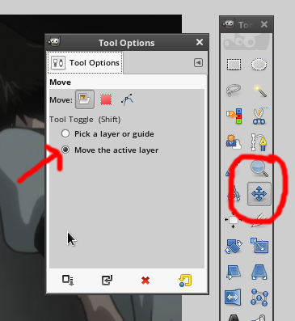
You might find out after you move the text that your spacing and newlines are off. This is what happened with me, actually. I ended up removing the newline between the first two lines. As for how you're supposed to position the text in the center, just eyeball it. Nobody will notice if you're off by a small amount. This is what I ended up getting for this particular example.
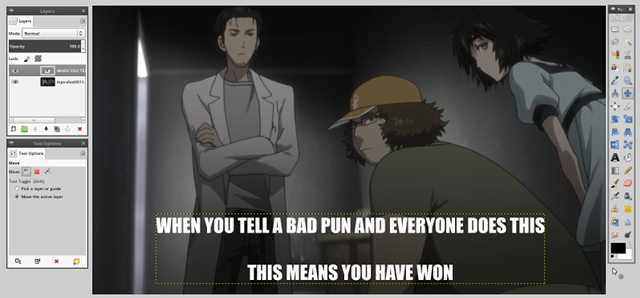
It's more important that the text fits well in with the background than that it's perfectly center so feel free to nudge it a bit to get it to look better.
Working the magic
Now we're going to make some sparks fly. Head over to the layers panel and right click on the text layer that we've made, and click Alpha To Selection. This will select everything that isn't transparent, which is basically just the outline of the text.
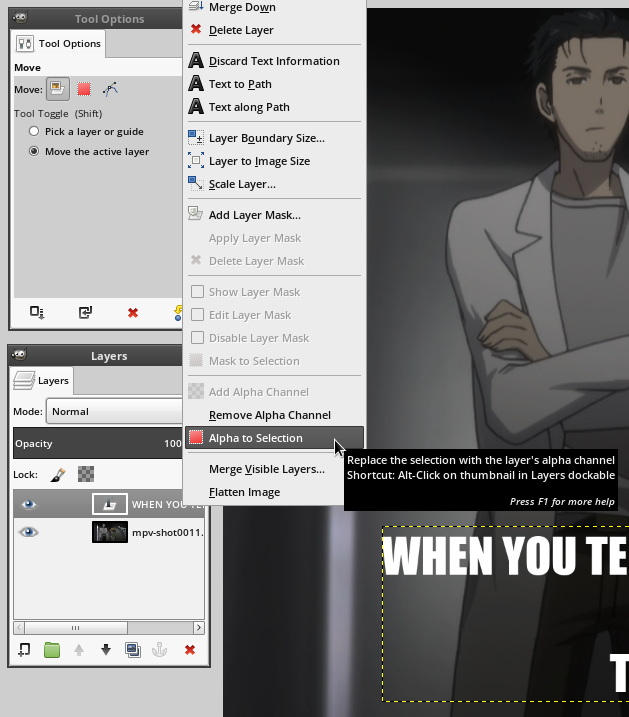
Now, go to Select → Grow in the select menu to grow the selection. In my screenshot you see the Shift+Ctrl+G keyboard shortcut but that's one I added myself. You won't have it, and you'll have to go through the menus.
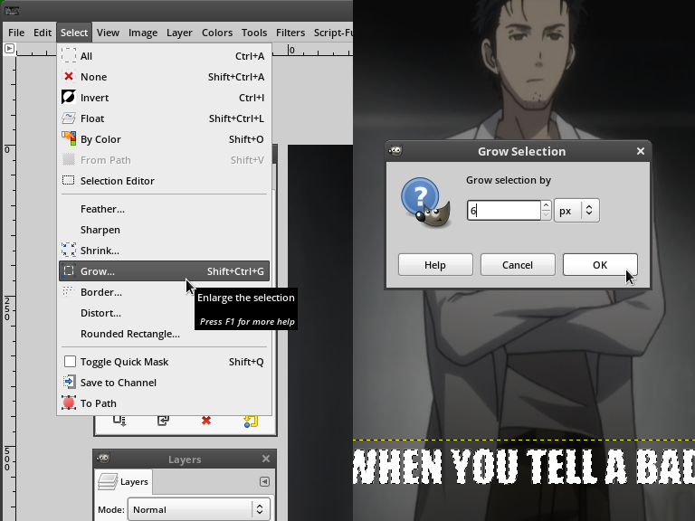
You see here that I grew my selection by 6. This is because 6 is one-twelfth of the font size I used, which was 72. This is why it's nice to have a multiple of 12 as your font size, because 1/12 of the font size is a good rule of thumb on how much to grow the selection. As with most of the numbers here, you don't have to use 1/12 of the font size, and sometimes you don't want to, but it's a good rule of thumb. If it looks too big or too small then you can always undo and try again with a smaller or larger value. (Note that the amount you grow it by is going to be an integer. If you enter a fractional value it'll convert it to an integer so you should enter an integer in anyway.)
Now, we're going to make a new transparent layer. Hit the rectangle icon in the lower left of the layer's panel, or hit Ctrl+Shift+N to create a new layer. It'll pop up a dialog. It doesn't matter what it's called and the default size will be correct, and it should have transparency selected by default, but you should doublecheck to be safe. Click OK.
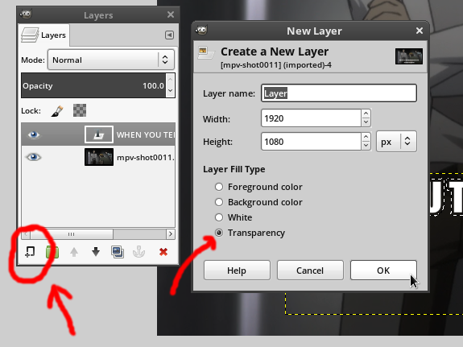
The layer might end up above everything. If so, click and drag the layer in the layer's panel so it's between the text and the background. It must be between the two of them. The middle layer must also be the active layer, so click on it to select it.
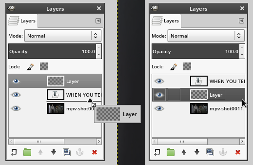
Now, select the paintbucket tool and make sure that the primary color you're painting is Black. I've highlighted the paintbucket tool (alternatively, hit Shift+B) and the color palette in red to make them easy to find:
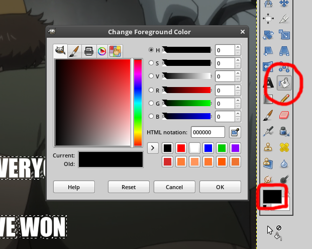
Now, all we have to do is paint the selection with the paintbucket tool. When you paint the selection, you'll notice that the dashed animated border thing is still there. You can go to Select → None or hit Ctrl+Shift+A to delesect everything as a preview. If you want to reselect it, you can Undo (Edit → Undo or Ctrl+Z) because selection changes go into the undo log as well. This is what mine looks like:
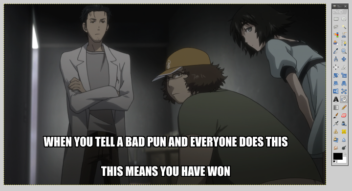
Notably, the border size of 6 is far too small, and the text size is too small. This is something that might happen. I tried again with a text size of 90 and a border size of 12, and it looks much better:
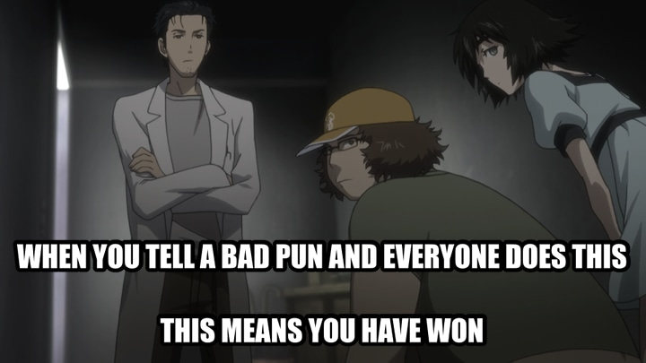
The size was off because my rule of thumb is not based on Impact Condensed. It's based on Open Sans Semibold. Let's look at font choices.
A word about fonts (or rather, several)
There's several fonts you can choose, each with their own upsides and downsides. Here's a quick list of the pros and cons of some of the fonts.
Impact Condensed
- Pro - Impact Condensed is the "standard meme font." It's the most common thing to see. Thick black border on white Impact Condensed text is an auto-identifiable meme.
- Pro - Impact Condensed is best used entirely in capital letters. This is a double-edged sword, but one benefit is that all caps can avoid English formatting issues like capitalizing 'I' or proper nouns. Using all caps means you can ignore the language's capitalization rules.
- Pro - If you use Windows, Impact Condensed will be on your computer by default.
- Con - Impact Condensed is a Nonfree Microsoft TrueType Core Font (msttcorefont). This means that it might not be on your computer if you don't use Windows. Even if you do have it installed, it's technically a violation of the license to use Impact Condensed on non-Windows systems for commerical purposes (this page's use counts as Fair Use under "education"). This could be an issue depending on what you're using the font for and how much you care about the licensing terms, which if you're about 98 percent of the population, you don't care at all.
- Con - Impact Condensed looks ugly (to me). It might be standard, but it's ugly.
- Con - USING ONLY UPPERCASE LETTERS MAKES THE TEXT HARD TO READ. CAPSLOCK TEXT IS HARD ON THE EYES. Text that has mostly lowercase letters with only a few capitals mixed in is much easier to read. Given that Impact Condensed requires you to use All Caps to make it "standard" you're essentially committing to having ugly hard to read text in the name of standardization.
Open Sans (specifically, Open Sans Semibold)
- Pro - Open Sans is significantly better as a dialogue caption, where the caption is specifically what the characters are saying.
- Pro - Open Sans is pretty (to me).
- Pro - Open Sans is free on Google Fonts. For those who care, it's licensed under Apache 2.0.
- Pro - Open Sans is best used with a mix of capital and lowercase letters. This is easier on the eyes.
- Pro - The measurements I used above work with Open Sans, even though they didn't work with Impact Condensed.
- Pro - Open Sans is become more and more ubiquitous on the internet and more and more projects are adopting it as a stylistically neutral sans-serif font. It's more stylistically neutral than Impact and it's prettier and less boring than Arial.
- Con - Open Sans is probably not installed on your system by default. You'll have to download it and install it. Not that this is very hard, mind you.
- Con - Open Sans doesn't have the "standard meme look" for an instantly recognizeable meme, and you might care about that. (I don't.)
- Con - Open Sans is best used with lowercase letters, which means you might run into issues with English capitalization rules. If you try to use all caps you'll find that Open Sans looks extremely boring in all capital letters.
Personally, I prefer Open Sans Semibold to Impact Condensed. Here's my meme-style text overlay from before, but using Open Sans Semibold and my rule-of-thumb estimates rather than what I did above.
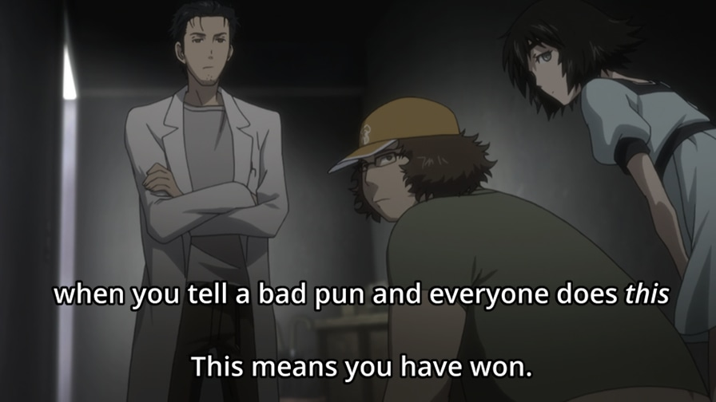
Exporting your image
When you save the image, it's going to ask you to save it as a GIMP Document Image, which uses the XCF file extention. This is GIMP's equivalent of a PSD (PhotoShop Document). You don't want to use XCF documents as images because they're not supported by anything except GIMP, and you shouldn't expect a working GIMP document to be useful in anything else. In PhotoShop you export the image with Save As... but not in GIMP. In GIMP, you use File → Export As..., or Ctrl+Shift+E. Be careful with File → Export or Ctrl+E unless you've already done Export As at least once, as this setting overwrites the last image you exported, but it might overwrite your source image if you haven't done Export As... yet.
When you go to export the image, you'll see approximately seven hundred million and fifty different options. Most of these are irrelevant, but I'll look at a few you might care about.
- GIF Image - Don't use this. GIF is a "lossless" format but only supports eight-bit color (256 colors) rather than full 24-bit color, which means you'll run into Color Banding issues. If you try to export it as a GIF it'll look pretty bad. There hasn't been a reason to use GIF since the late 1990s unless you're using animation (which we are not).
- Windows Bitmap (BMP) - Don't use this. There's no reason to use this instead of PNG. (In some corner cases where it's required, you will know.)
- TIFF Image - Don't use this. There are reasons to use TIFF images, but not for us. TIFF is a very large, extensible format that supports high-dynamic range color, EXIF metadata, and other nice things, none of which we actually care about. We don't need these features and TIFF is not designed as a web-friendly image format.
- WebP Image - Use at your own risk. Most websites do not support WebP (as of writing this). Firefox does not support WebP (as of writing this). Notably though, Discord Chat does fully support WebP. Even still, it's a use-at-your-own-risk thing, because the quality settings do not match up with the JPEG quality settings (you need to use 100 for everything).
- PNG Image - This is potentially worth using. Lossless format supported everywhere. See below for export options.
- JPEG Image - This is potentially worth using. Lossy format supported everywhere. See below for export options.
PNG options
PNG (Portable Network Graphics) is a lossless image format. It's supported everywhere. Lossless is good because it has no loss (duh), but it's bad in that the files will be larger than JPEGs. Before you just assume you should use PNG for everything because "JPEG looks like crap," you might not have noticed but the last two images above this line of text are JPEGs, and you really should consider exporting images as JPEG. If you ignore this warning and default to PNG for everything you'll end up with several-megabyte images rather than several-hundred-kilobyte images, and those megabytes matter, especially on mobile where people are using slow cellular internet. Anyway, let's look at the PNG export options.
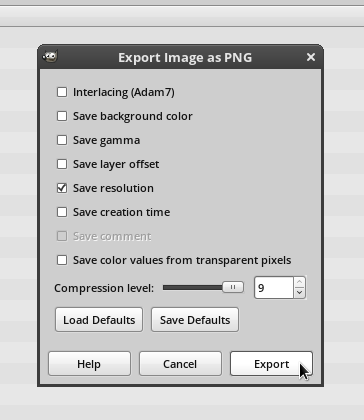
About the various options:
- Adam7 Interlacing - If you turn this on, it'll allow the PNG to be loaded progressively, but the filesize will be larger because the image will lose compressibility. I generally don't think it's worth it. I'd leave it off. If you care about responsive web design or the ability to load the image quickly and progressively, then I'd just use a progressive JPEG, to be honest.
- Save Background Color - Leave this off, but it's not super important. The background of the image is not visible for us, so we have no reason to save it.
- Save Gamma - Leave this off, but it's not super important. It's not a value that we care about, given that we digitally edited the image with very light and dark text.
- Save Layer Offset - Leave this off. The largest layer (the background) fills the canvas perfectly so there's no reason to save it. Turning it on usually causes more problems than it's worth, unless you know why you want to turn it on.
- Save Resolution - I'd leave this on, but it's not super important. Leaving it on will keep the value the source image if you had it in case it matters. If the original image didn't have resolution info then it'll probably save it as 72 pixels per inch, and most programs ignore this anyway so there isn't any real harm in doing this.
- Save Creation Time - Up to you. Your filesystem will also track this, but filesystem modification/creation time is not super reliable.
- Save Comment - Your Choice. My checkbox above is disabled because I didn't have an image comment. If you did then it's your choice. If you want to add an image comment you need to go to Image → Image Properties, and then add a comment in the Comment tab. Note that PNG comments are not as widely supported as JPEG comments. They do not show up with ImageMagick's
identify -verboseor with Eye of Mate/GNOME, but you can view them withexiftool. - Save Color Values from Transparent Pixels - Leave this off, but it's not super important. In our case it doesn't actually matter because we have no transparent pixels, but you generally should leave this off unless you know why you want to leave it on.
- Compression Level - Set this as high as it goes. It's lossless image compression so you don't have any reason not to set it all the way up.
JPEG options
JPEG is a lossy image format. It's supported everywhere. Lossy images sound bad because of the loss of data but you can achieve a filesize that's much smaller than anything achievable through lossless means. JPEGs are famous for being terrible, but they're really not. If you couldn't tell, I like using JPEGs over PNGs for this sort of image. They're not useful for everything but I really think people don't take it seriously enough, especially since JPEG doesn't work now like it did in the late 1990s. People say "JPEGs look terrible," but they're only somewhat right.
One thing JPEG images are famous for is Macroblocking, which is the blockiness created when you turn the quality way down:
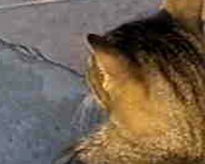
Let me be straight, macroblocking will not be a problem for us. It's a characteristic problem of low-quality JPEGs. Another artifact that JPEG images are famous for is the fuzziness that occurs near sharp boundaries, such as text. This is called Ringing:
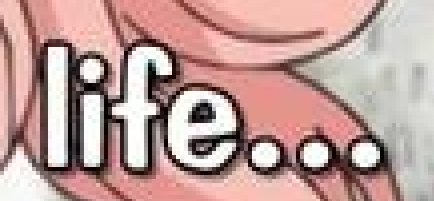
This is another thing that you won't really have to worry about, i.e. ringing will not be a problem for us. Ringing is a characteristic problem of mid-quality JPEGs. We're going to be using high quality JPEGs. Lossless predictive formats like PNG excel at large, flat or mostly flat areas, and JPEG struggles the most at sharp boundaries, so JPEG is not an appropriate tool to compress screenshots of text. However, for anything else, JPEG is potentially an appropriate tool and it's at least worth considering. Anyway, let's actually get to the JPEG export settings.
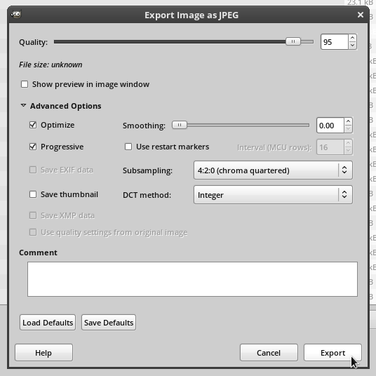
About the various options:
- Quality - Set this to 95 or higher. I personally set it 98 most of the time as this achieves transparency, which means "no perceived loss." Many people like to use 90 as a standard, but when it's that low ringing artifacts can start to emerge. I recommend against setting it to 100 unless you really think it matters. Note that 98 → 99 is often a 50 percent filesize increase and 98 → 100 is often more than twice the filesize. If you need to set it to 100 to achieve transparency you should consider using a lossless format like PNG in addition to a quality-100 JPEG.
- Optimize - Yes. If you ever need to turn this off for some reason, you will know.
- Progressive - Yes. This allowes the image to be downloaded progressively, so if only a fraction of the image has loaded you'll get a lower-resolution version of the same image rather than part of the image cut off at the top. Unlike PNG, progressive JPEGs are smaller than their nonprogressive counterparts. If you ever need to turn this off for some reaosn, you will know.
- Use Restart Markers - I don't actually know what this does. It's off by default so I left it off.
- Save Thumbnail - This is unnecessary because we're using progressive JPEG. Leave it off.
- Sumbsampling - Use 4:2:0 (chroma quartered). What does this do? It takes the chroma (color information) and cuts the resolution in half in each direction. This is called Chroma Subsampling. This doesn't reduce the resolution of the image because the luma (lightness/value information) is still fully there. It sounds like this would be awful, but it's not. You won't be able to tell the difference. Trust Me. Less emphatically, this is true almost all the time, but not all the time. However, we are using lossy compression, so this should not surprise you. The idea behind chroma subsampling is that humans suck at seeing differences in color but we're pretty good at noticing differences in lightness, so this is a human-specific visual optimization.
- DCT Method - Integer. Fast Integer is worse than Integer visually, and there's no real visual quality difference betwee Integer and Floating Point. Integer is faster for both you and the person viewing the image, so use that.
- Comment - I don't care. Knock yourself out, kid.
Final Images
Here's the final image. You can view the JPEG (187k) or the PNG (861k) by clicking the links, or you could view the embedding below.
{kind=link}
{kind=link}